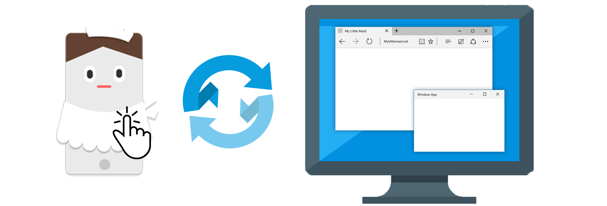

MyLittleMaid allows you to control your PC remotely via your cell phone.
MyLittleMaid makes
your life more convenient than any other apps can.
Enjoy your life with MyLittleMaid!
MyLittleMaid, anywhere will help you.
Easy, and powerful.
Mouse
MyLittleMaid offers trackpad features like a laptop!

Powerpoint
You can use it as a laser pointer and a PPT controller too!
TASK
You can control tasks running on your Windows!